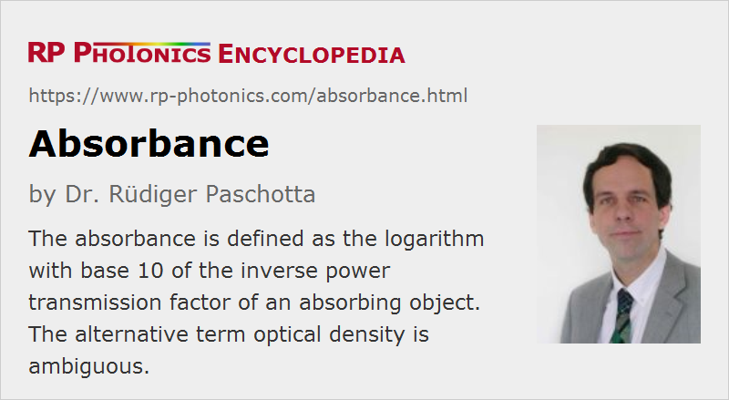

Absorbance
Definition: the logarithm with base 10 of the inverse transmittance
Alternative term: optical density
German: Extinktion
Formula symbol: A
How to cite the article; suggest additional literature
Author: Dr. Rüdiger Paschotta
The absorbance e.g. of an optical filter or saturable absorber is the logarithm with base 10 of its inverse power transmission factor (transmittance):
For example, an absorbance of 3 means that the optical power is attenuated by the factor 103 = 1000. That would correspond to an attenuation by 30 decibels and a transmittance of 10−3.
It is usually assume that any optical power losses are caused by absorption and not e.g. by scattering. Otherwise, should use the term attenuance.
Absorbance should not be confused with absorptance, which is a dimensionless quantity.
If several absorbing devices are used in series, their absorbance values can simply be added. The absorbance of a homogeneously doped laser crystal, for example, is proportional to its length and the doping concentration.
An alternative term, which however is ambiguous, is optical density.
Absorbance values often depend on the optical wavelength.
Note that optical attenuation e.g. of a neutral density filter may not be entirely resulting from absorption, but at least partially from reflection; the term absorbance is then questionable.
Relation to the Absorption Coefficient
The absorption per unit length is often quantified with an absorption coefficient α. The power transmission factor (transmittance) for a propagation length z is then exp(−α z). Therefore, the absorbance can be calculated as
In some cases, one uses a decadic absorption coefficient, which is smaller by the factor ln 10, so that the absorbance is simply that coefficient times the optical path length.
Questions and Comments from Users
Here you can submit questions and comments. As far as they get accepted by the author, they will appear above this paragraph together with the author’s answer. The author will decide on acceptance based on certain criteria. Essentially, the issue must be of sufficiently broad interest.
Please do not enter personal data here; we would otherwise delete it soon. (See also our privacy declaration.) If you wish to receive personal feedback or consultancy from the author, please contact him e.g. via e-mail.
By submitting the information, you give your consent to the potential publication of your inputs on our website according to our rules. (If you later retract your consent, we will delete those inputs.) As your inputs are first reviewed by the author, they may be published with some delay.
See also: absorption, absorption coefficient, absorptance, optical density, reflectance, transmittance, transition cross sections, optical attenuators
and other articles in the category general optics
|  |
If you like this page, please share the link with your friends and colleagues, e.g. via social media:
These sharing buttons are implemented in a privacy-friendly way!